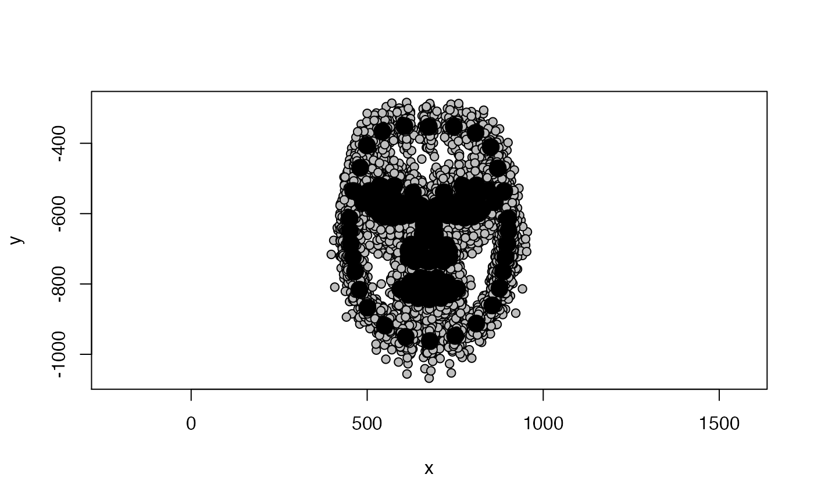
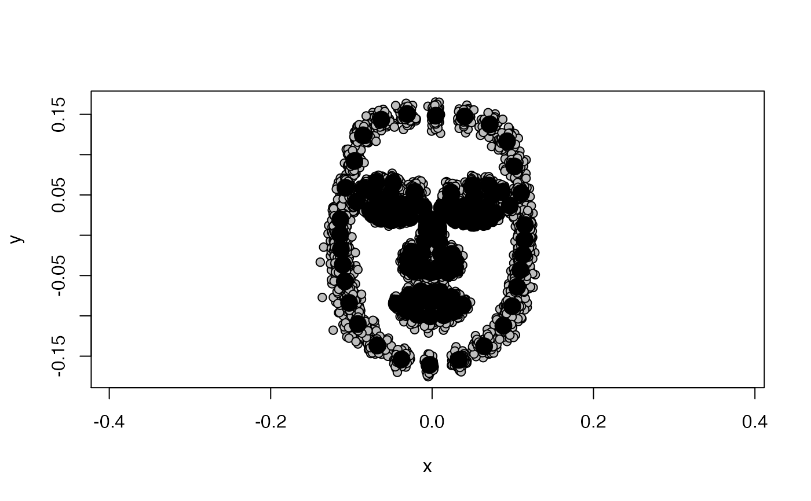

Performs some of the routine steps for getting landmark data ready for shape analyses, such as Procrustes alignment and principal component analysis. For more details see vignette:
vignette("intro", package = "facefuns")
quickstart( data, rotate = c(NA, "flipX", "flipY", "rotateC", "rotateCC"), plot_sample = TRUE, pc_criterion = "broken_stick" )
| data | Three-dimensional array of dimensions p, k, and n. p = number of landmarks, k = dimension (2D or 3D), n = number of specimens. |
|---|---|
| rotate | The type of rotation or flip to be performed (after Procrustes alignment, landmark templates might have to be rotated). Specimens can be flipped with respect to x or y axes, or rotated clockwise or counter-clockwise. See |
| plot_sample | Plot sample to check data. See |
| pc_criterion | Criterion used to choose which PCs to retain. See selectPCs |
Returns a list of the following components:
Three-dimensional array containing Procrustes-aligned data
Coordinates of sample average for plotting
List of selected PCs (including their SD, variance explained and cumulative variance explained), number of selected PCs, criterion used to select PCs
Principal component scores
PCs for plotting. Will by default create list of coordinates for all selected PCs at +/- 3SDs. To create plots of other PCs or at different level of SD, please see plot2DPCs
path_to_tem <- system.file("extdata", "tem", package="facefuns") remove_points <- c(45:50, 100:104, 116:125, 146:158, 159:164, 165:170, 171:174, 175:179, 184:185) data <- read_lmdata(lmdata = path_to_tem, remove_points = remove_points)shapedata <- quickstart(data = data, rotate = "rotateC", plot_sample = TRUE, pc_criterion = "broken_stick")